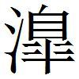
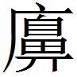

魏三
秦趙約而伐魏
秦、趙約而伐魏〔一〕 ，魏王患之。芒卯〔二〕 曰：「王勿憂也。臣請發張倚〔三〕 使謂趙王〔四〕 曰，夫鄴，寡人固刑〔五〕 弗有也。今大王收秦而攻魏，寡人請以鄴事大王。」趙〔六〕 王喜，召相國而命之曰：「魏王請以鄴〔七〕 事寡人，使寡人絕秦。」相國曰：「收秦攻魏，利不過鄴。今不用兵而得鄴，請許魏。」
〔一〕 鮑本 「趙約」作「約趙」。
〔二〕 姚本 淮南子 注，孟卯，齊人也，戰國策 作「芒卯」。
〔三〕 鮑本 魏人。
〔四〕 鮑本 惠文。
〔五〕 姚本 一作「形」。鮑本 「刑」作「形」。形，猶勢也。高注為刑法，雖通，而此書多作「形」。補曰：此書「刑」、「形」字通。
〔六〕 姚本 一本無「趙」字。
〔七〕 姚本 曾、劉一作「國」。
張倚因謂趙王曰：「敝邑之吏效城者，已在鄴矣。大王且何以報魏？」趙王因令閉關絕秦。秦、趙大惡。
芒卯應趙使曰：「敝邑所以事大王者，為完鄴也。今郊〔一〕 鄴者，使者之罪也，卯不知也。」趙王恐魏承秦之怒，遽割五城以合於魏而支秦。〔二〕
〔一〕 姚本 孫一作「效」。鮑本 「郊」作「效」。補曰：當從上文。札记 今本「郊」作「效」，乃誤涉鮑也。丕烈案：作「效」自是，但與姚氏校語矛盾也。
〔二〕 鮑本 此六年，書卯以詐重者此也。彪謂：此馮亭上黨之事也，惠文失之於魏，孝成失之於韓，雖所喪敗有多寡之差，其貪而不明，真父子也。
芒卯謂秦王
芒卯謂秦王〔一〕 曰：「王之士未有為之中〔二〕 者也。臣聞明王不胥〔三〕 中而行。王之所欲於魏者，長羊〔四〕 、王屋〔五〕 、洛林〔六〕 之地也。王能使臣為魏之司徒〔七〕 ，則臣能使魏獻之。」秦王曰：「善。」因任之〔八〕 以為魏之司徒。
〔一〕 鮑本 昭。
〔二〕 鮑本 中，謂用事於諸國之中，猶內應云。
〔三〕 鮑本 「 」作「咠」，又改作「背」。補曰：一本作「 」，俱未詳。「 」，說見趙策 。札记 今本「 」作「背」，乃誤涉鮑也。
」作「咠」，又改作「背」。補曰：一本作「 」，俱未詳。「 」，說見趙策 。札记 今本「 」作「背」，乃誤涉鮑也。
〔四〕 鮑本 「羊」作「平」。下同，屬汝南。補曰：地未詳，或字誤。
〔五〕 鮑本 在河東垣縣東北。
〔六〕 鮑本 即蘇代所謂林中，河南宛陵林鄉也。
〔七〕 鮑本 本周官 ，此所謂為之中。
〔八〕 鮑本 無「之」字。
謂魏王曰：「王所患者上地〔一〕 也。秦之所欲於魏者，長羊、王屋、洛林之地也。王獻之秦，則上地無憂患。因請以下兵東擊齊，攘地必〔二〕 遠矣。」魏王曰：「善。」因獻之秦。
〔一〕 鮑本 上流之地，近秦。正曰：未知所指。
〔二〕 鮑本 「必」下有「不」字。
地入數月，而秦兵不下。魏王謂芒卯曰：「地已入數月，而秦兵不下，何也？」芒卯曰：「臣有死罪。雖然，臣死，則契折於秦〔一〕 ，王無以責秦。王因赦其罪，臣為王責約於秦。」
〔一〕 鮑本 折，毀也，言不可有責於秦。
乃之秦，謂秦王曰：「魏之所以獻長羊、王屋、洛林之地者，有意〔一〕 欲以下大王之兵東擊齊也。今地已入，而秦兵不可下，臣則死人也。雖然，後山東之士，無以利事王者矣。」秦王戄〔二〕 然曰：「國有事，未澹〔三〕 下兵也，今以兵從。」後十日，秦兵下。芒卯并將秦、魏之兵，以東擊齊，啟地二十二縣。
〔一〕 鮑本 無「有意」二字。
〔二〕 鮑本 「戄」作「懼」。補曰：姚本 作「戄」。札记 丕烈案：「懼」、「瞿」同字，作懼亦可通。
〔三〕 鮑本 「澹」作「贍」。贍，給也。補曰：即贍。前漢志 「澹」用□。
秦敗魏於華走芒卯而圍大梁
秦敗魏於華〔一〕 ，走芒卯而圍大梁。須賈〔二〕 為魏謂穰侯曰：「臣聞魏氏大臣父兄皆謂魏王曰：『初〔三〕 時惠王伐趙，戰勝乎三梁〔四〕 ，十萬之軍拔邯鄲〔五〕 ，趙氏不割，而邯鄲復歸。齊人攻燕，殺子之，破故國〔六〕 ，燕不割，而燕國復歸。燕、趙之所以國全兵勁，而地不并乎諸侯者，以其能忍難而重出地也。宋、中山數伐數割，而隨以亡。臣〔七〕 以為燕、趙可法，而宋、中山可無為也。夫秦貪戾之國而無親，蠶食魏，盡晉國，戰勝睾子〔八〕 ，割八縣，地未畢入而兵復出矣。夫秦何厭之有哉！今又走芒卯，入北地〔九〕 ，此非但攻梁也，且劫王以多割也，王必勿聽也。今王循楚、趙而講〔一〇〕 ，楚、趙怒而與王爭事秦，秦必受之。秦挾楚、趙之兵以復攻，則國救亡不可得也〔一一〕 已。願王之必無講也。王若欲講，必少割而有質〔一二〕 ；不然必欺〔一三〕 。』是臣之所聞於魏也，願君之以是慮事也。
〔一〕 鮑本 華山。在弘農華陰。秦紀 作華陽。註，亭名，在密縣。事在此二年。正曰：華陰之「華」，去聲。華下、華陽，史 無音。
〔二〕 鮑本 魏人。
〔三〕 札记 今本「初」誤「幼」。
〔四〕 鮑本 春秋 ，秦取梁，漢夏陽也。河內有梁，周小邑也。陳留、浚儀、大梁為三，皆魏地。正曰：索隱 云云，梁即南梁，又說見齊策 。
〔五〕 鮑本 秦十二年攻趙，虜莊賈。正曰：魏惠王十八年拔趙邯鄲，二十年歸趙邯鄲。
〔六〕 鮑本 補曰：通鑑 、大事記 在宣王二十九年。
〔七〕 姚本 曾本無「臣」字。鮑本 此臣，魏大臣所稱。
〔八〕 姚本 史記 作「暴子」。鮑本 「睾」作「睪」。地缺。正曰：皋，上刀反；睪，羊益反。又「

」作「澤」。古書三字皆通，此未有據。史 「睾」作「暴」，下同。徐廣云，暴鳶也。大事記 作「暴吏」。未詳。〔九〕 鮑本 梁之北，非郡。正曰：史記 作「宅」，策 字訛，下同。正義 引竹書云，宅陽一名北宅。括地志 云，故城在鄭州滎陽縣西。札记 丕烈案：北宅，徐廣云，宅陽也。張守節同。
〔一〇〕 鮑本 循，猶順也。以下文考之，秦時蓋合楚、趙共攻魏，魏見二國為秦用，遂欲講秦，不反覆思之也。正曰：「循」即「徇」。札记 丕烈案：吳說未是也。史記 「循」作「有」，謂魏方有楚、趙之救，此當與之同意。「循」必誤字也。下句「楚趙怒而與王爭事秦」，史記 「而」下多「去王」二字，意尤明。鮑說則更誤矣。
〔一一〕 鮑本 衍「也」字。
〔一二〕 鮑本 亦事驗也。正曰：索隱 云，少割地而求秦質子。
〔一三〕 鮑本 補曰：索隱 云，必稱秦欺。
「周書 曰：『維命不于常。』此言幸之不可數也。夫戰勝睾子，而割八縣，此非兵力之精，非計之工〔一〕 也，天幸〔二〕 為多矣。今又走芒卯，入北地，以攻大梁，是以天幸自為常也。知者不然。
〔一〕 鮑本 「工」作「功」。
〔二〕 鮑本 漢史「天幸」語，本此。
「臣聞魏氏悉其百縣〔一〕 勝兵，以止戍大梁，臣以為不下三十萬。以三十萬之眾，守十仞之城，臣以為雖湯、武復生，弗易攻也。夫輕信楚、趙之兵，陵十仞之城，戴〔二〕 三十萬之眾，而志必舉之，臣以為自天下之始分以至于今，未嘗有之也。攻而不能拔，秦兵必罷〔三〕 ，陰〔四〕 必亡，則前功必棄矣。今魏方疑，可以少割收也。願〔五〕 之及楚、趙之兵未任於大梁也〔六〕 ，亟以少割收。魏〔七〕 方疑，而得以少割為和，必欲之，則君得所欲矣。楚、趙怒於魏之先己講也〔八〕 ，必爭事秦。從〔九〕 是以散，而君後擇焉〔一〇〕 。且君之嘗割晉國取地也，何必以兵哉〔一一〕 ？夫兵不用，而魏效絳、安邑，又為陰啟〔一二〕 兩機，盡〔一三〕 故宋，衛效尤憚。〔一四〕 秦兵〔一五〕 已令〔一六〕 ，而君制之，何求而不得？何為而不成？臣願君之熟計而無行危也。」
〔一〕 姚本 曾本作「姓」。
〔二〕 鮑本 補曰：一本標孫作「戰」。札记 丕烈案：作「戴」者誤也。史記 作「戰」。
〔三〕 鮑本 音疲。
〔四〕 鮑本 陰，穰侯別邑。正曰：陰即陶，說見趙策 。札记 丕烈案：史記 作陶邑。
〔五〕 鮑本 「願」下補「君」字。補曰：史 ，願君逮楚、趙。札记 今本「願」下有「君」字，乃誤涉鮑也。
〔六〕 鮑本 未以攻梁自任。
〔七〕 鮑本 「魏」字重。札记 丕烈案：重者當是。
〔八〕 鮑本 己兵未至，而與秦講。
〔九〕 鮑本 從橫之「從」。
〔一〇〕 鮑本 擇其所與於散從之後。
〔一一〕 鮑本 先割取時不用兵。
〔一二〕 鮑本 言得亡國以拓陰之封地。補曰：「又為」止「己令」，策 文有脫誤，見後。
〔一三〕 鮑本 兩，謂得縣啟封。盡，無遺也。
〔一四〕 鮑本 「尤憚」作「憚尤」。魏自比小國，二國，小國也。
〔一五〕 鮑本 出地而小，故愈畏秦。
〔一六〕 姚本續 云：史 ，衛效單父，秦兵已全。鮑本 「令」作「合」。魏合秦。補曰：史 云，「又為陶開兩道，幾盡故宋，衛必效單父，秦兵可全」云云。按此文明順，姚註亦宜引從之。正義 云，「故宋及單父，是陶南道；魏安邑及絳，是陶北道」。索隱 云，「穰侯封陶，魏效絳、安邑，是得河東地，言從秦通陶，開河西、河東之兩道」。此時宋已滅，是秦將盡得宋地也。愚謂「可全」，即上言不用之意。
穰侯曰：「善。」乃罷梁圍。〔一〕
〔一〕 鮑本 彪謂：賈之說，不足以已秦也，為其為魏也過深，而說秦者不切。夫以秦為天幸，而欲其無行危也，秦豈信之哉！秦行是何危之有？且其為魏之過深也，適足以疑秦，豈沮於是哉！梁圍之解，將別有故，非賈力也。正曰：大事記 略載此章及穰侯攻大梁章，謂同一術。愚謂，魏利於少割，穰侯喜得此地而罷兵，亦無不可。大事記 ，周赧王四十年，秦昭三十二，魏安釐二，韓釐二十一，趙惠文二十四年，秦以魏冉為相國，伐韓，暴鳶救魏，魏冉破之，斬首四萬，鳶走開封，魏割八縣以和。魏冉復伐魏，走芒卯，入北宅，遂圍大梁，魏割溫以和。四十一年，魏背秦與齊從親，秦魏冉伐魏，拔四城，斬首四萬。四十二年，趙、魏伐韓華陽，秦魏冉、白起、客卿胡傷救韓，敗魏將芒卯華陽，斬首十三萬，取卷、蔡陽、長社。又敗趙將賈偃，沉其卒二萬於河，取觀津。魏予秦南陽以和。以其地為南陽郡，遷免臣居之。通鑑綱目 書略同，不著暴鳶、芒卯等及以地為南陽郡一節。補曰：按史 ，魏安釐王二年、三年、四年，連歲魏冉將兵來伐。二年之戰，韓暴鳶救魏敗走。年表 、秦紀 、魏世家 、魏冉傳 皆云兵至大梁。次年之戰不地。最後華陽之戰，趙、魏伐韓，秦救韓，敗趙、魏，走芒卯。但史 所載有差互，紀以擊芒卯華陽，傳以走暴鳶，並為次年事。華陽之戰，或云得三晉將，或云攻趙、韓、魏。八縣、三縣之殊，十萬、十五萬之舛。故大事紀參定書之。今考此策 ，須賈之辭，謂戰勝暴子，割八縣，地未畢而兵復出。此大事記 所以書此役繼於走暴鳶之後。但策首書秦敗魏於華，恐「於華」二字因下章誤衍也。又按秦紀 ，昭王三十四年，書秦與魏韓上庸地為一郡南陽，免臣遷居之。三十五年初，置南陽郡。大事記 於魏予秦南陽後，書以其地為南陽郡，遷免臣居之，即以此為是年事。按南陽凡二，其一河南之脩武，其一鄧州之堵陽。免臣者，以罪免，遷守新邊。秦不信敵國之民，故徙其國人使錯居之。前此二十七年，攻楚，赦罪人遷之南陽。大事記 必謂前已備楚，故今以新得之南陽，而不知紀書乃謂秦與魏韓上庸地為一郡於南陽。上庸屬漢中，今房州竹山縣，則正鄧之南陽也。次年乃書置南陽郡。秦南陽郡即鄧，而脩武更置河內郡，不聞兩南陽也。昭王四十四年，秦白起攻韓取南陽，絕大行道，使秦已置郡，不應復云爾。大事記 亦書之矣。此條蓋因魏入南陽以和，偶與下文南陽免臣相次，而致誤爾。因上論大事記 文附于此。
秦敗魏於華魏王且入朝於秦
秦敗魏於華，魏王且入朝於秦。周訢〔一〕 謂王曰：「宋人有學者，三年反而名其母。其母曰：『子學三年，反而名我者，何也？』其子曰：『吾所賢者，無過堯、舜，堯、舜名。吾所大者，無大天地，天地名。今母賢不過堯、舜，母大不過天地，是以名母也。』其母曰：『子之於學者〔二〕 ，將盡行之乎？願子之有以易名母也。子之於學也，將有所不行乎〔三〕 ？願子之且以名母為後也。』今王之事秦，尚有可以易入朝者乎？願王之有以易之，而以入朝為後。」魏王曰：「子患寡人入而不出邪？許綰為我祝曰：『入而不出，請殉寡人以頭。』」周訢對曰：「如臣之賤也，今人有謂臣曰，入不測之淵而必出，不出，請以一鼠首為女殉者，臣必不為也。今秦不可知之國也，猶不測之淵也；而許綰之首，猶鼠首也。內王於不可知之秦，而殉王以鼠首，臣竊為王不取也。且無梁孰與無河內急？」王曰：「梁急。」「無梁孰與無身急？」王曰：「身急。」曰：「以三者，身，上也；河內，其下也。秦未索其下，而王效其上，可乎？」
〔一〕 鮑本 「訢」作「訴」。補曰：一本「訴」作「訢」，是，下同。
〔二〕 鮑本 於其所學。
〔三〕 鮑本 「乎」作「也」。
王尚未聽也。支期曰：「王視楚王〔一〕 。楚王入秦〔二〕 ，王以三乘先之〔三〕 ；楚王不入，楚、魏為一，尚足以捍秦。」王乃止。王謂支期曰：「吾始已諾於應侯矣，今不行者欺之矣。」支期曰：「王勿憂也。臣使長信侯〔四〕 請無內王，王待臣也。」
〔一〕 鮑本 頃襄。
〔二〕 鮑本 絕句。
〔三〕 鮑本 先楚至秦。
〔四〕 鮑本 魏相之善應侯者。
支期說於長信侯曰：「王命召相國。」長信侯曰：「王何以臣為？」支期曰：「臣不知也，王急召君。」長信侯曰：「吾內王於秦者，寧以為秦邪？吾以為魏也。」支期曰：「君無為魏計，君其自為計。且安〔一〕 死乎？安生乎？安窮乎？安貴乎？君其先自為計，後為魏計。」長信侯曰：「樓公將入矣〔二〕 ，臣今從。」支期曰：「王急召君，君不行，血濺君襟矣！」
〔一〕 鮑本 問何所安。
〔二〕 鮑本 緩也。俟其入欲與之議。正曰：無考。樓緩、樓鼻，韓策 並見樓梧，皆此時人。
長信侯行，支期隨其後。且見王，支期先入謂王曰：「偽病者乎而見之〔一〕 ，臣已恐之矣。」長信侯入見王，王曰：「病甚奈何！吾始已諾於應侯矣，意雖道死〔二〕 ，行乎〔三〕 ？」長信侯曰：「王毋行矣！臣〔四〕 能得之於應侯〔五〕 ，願王無憂。」〔六〕
〔一〕 鮑本 令王見而辭疾。
〔二〕 姚本 曾本作「雖欲道死」，劉本作「意雖死」。
〔三〕 鮑本 雖死於路，猶將行。
〔四〕 姚本 劉本作「且」。
〔五〕 鮑本 「侯」下有「矣」字。能使應侯止王之行。
〔六〕 鮑本 彪謂：周訴之愛王也甚忠，其論王也甚切，賢智人也。釐王不能聽而聽支期，期豈賢於訴哉？蓋期之所效者事，而訴之所諭者理，庸人固可示以事，而難以理諭也。微二臣者釐其為楚懷與！補曰：「為我」、「為王」、「以為秦」、「以為魏」之「為」，去聲。
華軍之戰
華〔一〕 軍之戰，魏不勝秦。明年，將使段干崇割地而講。
〔一〕 姚本 一本有「陽」字。鮑本 「軍」作「陽」。
孫臣〔一〕 謂魏王曰：「魏不以敗之上〔二〕 割，可謂善用不勝矣；而秦不以勝之上割，可謂不能〔三〕 用勝矣。今處期年乃欲割，是群臣之私〔四〕 而王不知也。且夫欲璽者〔五〕 ，段干子也，王因使之割地；欲地者，秦也，而王因使之受〔六〕 璽。夫欲璽者制地，而欲地者制璽，其勢必無魏矣。且夫姦臣〔七〕 固皆欲以地事秦。以地事秦，譬猶抱薪而救火也。薪不盡，則火不止。今王之地有盡，而秦之求〔八〕 無窮，是薪火之說也。」
〔一〕 鮑本 並魏人。
〔二〕 鮑本 上，謂當其時。
〔三〕 鮑本 「能」作「善」。
〔四〕 鮑本 計不及也。
〔五〕 鮑本 得秦封，受其璽。
〔六〕 鮑本 「受」作「授」。
〔七〕 鮑本 「臣」作「人」。
〔八〕 鮑本 「之求」作「求之」。
魏王曰：「善。雖然，吾已〔一〕 許秦矣，不可以革〔二〕 也。」對曰：「王獨不見夫博者之用梟邪〔三〕 ？欲食則食，欲握則握。〔四〕 今君劫於群臣而許秦，因曰不可革，何用智之不若梟也？」魏王〔五〕 曰：「善。」乃案其行〔六〕 。
〔一〕 鮑本 「已」作「以」。
〔二〕 鮑本 革，更也。
〔三〕 鮑本 猶上善用勝矣。補曰：正義 云，博頭有刻為梟鳥形者，擲得梟者，合食其子。若不便，則為餘行也。
〔四〕 鮑本 握，不食也。食者行棋，握不行也，故史曰，「便則行，不便則止」。
〔五〕 札记 今本脫「王」字。
〔六〕 鮑本 按，猶止。記 四年有。補曰：史 ，安釐王四年，華陽戰敗後，段干子請予南陽以和。此策 云「按其行」。通鑑綱目 云，「王不聽，卒以南陽為和」。
齊欲伐魏〔校一〕
〔校一〕 此篇鮑本在齊策 。
齊欲伐魏，魏使人謂淳于髡曰：「齊欲伐魏，能解魏患，唯先生也。敝邑有寶璧二雙，文馬二駟〔一〕 ，請致之先生。」淳于髡曰：「諾。」入說齊王曰：「楚，齊之仇敵也；魏，齊之與國也〔二〕 。夫伐與國，使仇敵制其餘敝〔三〕 ，名醜而實危〔四〕 ，為王弗取也。」齊王曰：「善。」乃不伐魏。
〔一〕 鮑本 文，毛色成文。馬四匹為駟。
〔二〕 鮑本 魏策 ，馬陵之敗，魏請臣畜朝齊，楚王怒，伐齊，則此所言也。
〔三〕 鮑本 言楚將因齊兵勞而伐之。
〔四〕 鮑本 伐與國，醜也，而有楚伐之危。
客謂齊王曰：「淳于髡言不伐魏者，受魏之璧、馬也。」王以謂淳于髡曰：「聞先生受魏之璧、馬，有諸？」曰：「有之。」「然則先生之為寡人計之何如？」淳于髡曰：「伐魏之事不便〔一〕 ，魏雖刺髡，於王何益？若誠不〔二〕 便，魏〔三〕 雖封髡，於王何損？且夫王無伐與國之誹，魏無見亡之危，百姓無被兵之患，髡有璧、馬之寶，於王何傷乎？」〔四〕
〔一〕 鮑本 伐魏不便，魏所欲也，而髡止之，故魏刺之。雖刺髡而齊實不便，非益也。此設辭也。正曰：強注終不通，說見下。
〔二〕 姚本 劉無「不」字。鮑本 補曰：姚云，「若誠」下劉本無「不」字。愚案，上句當無「不」字，義乃通，恐有訛舛。
〔三〕 姚本 曾無「魏」字。
〔四〕 鮑本 原在魏策 。正曰：為魏而說，當從舊。
秦將伐魏
秦將伐魏。魏王聞之，夜見孟嘗君〔一〕 ，告之曰：「秦且攻魏，子為寡人謀，奈何？」孟嘗君曰：「有諸侯之救，則國可存也。」王曰：「寡人願子之行也。」重為之約車百乘。
〔一〕 鮑本 本傳，齊閔驕，故奔魏，魏相之。此十一年。正曰：見後。
孟嘗君之趙，謂趙王〔一〕 曰：「文願借兵以救魏。」趙王曰：「寡人不能。」孟嘗君曰：「夫敢借兵者，以忠王也。」王曰：「可得聞乎？」孟嘗君曰：「夫趙之兵，非能〔二〕 彊於魏之兵；魏之兵，非能〔三〕 弱於趙也。然而趙之地不歲危，而民不歲死；而魏之地歲危，而民歲死者，何也？以其西為趙蔽〔四〕 也。今趙不救魏，魏歃〔五〕 盟於秦，是趙與強秦為界也，地亦且歲危，民亦且歲死矣。此文之所以忠於大王也。」趙王許諾，為起兵十萬，車三百乘。
〔一〕 鮑本 惠文。
〔二〕 姚本 曾無「能」字。
〔三〕 姚本 曾無「能」字。
〔四〕 鮑本 魏在趙西，為之蔽秦。
〔五〕 鮑本 歃之血也。
又北見燕王〔一〕 曰：「先日公子〔二〕 常約兩王〔三〕 之交矣。今秦且攻魏，願大王之救之。」燕王曰：「吾歲不熟二年矣，今又行數千里而以助魏，且奈何？」田文曰：「夫行數千里而救人者，此國之利也。今魏王出國門而望見軍，雖欲行數千里而助人，可得乎？」燕王尚未許也。田文曰：「臣效便計於王，王不用臣之忠計，文〔四〕 請行矣。恐天下之將有大變也。」王曰：「大變可得聞乎？」曰：「秦攻魏未能克之也，而臺已燔，游已奪矣〔五〕 。而燕不救魏，魏王折節割地，以國之半與秦，秦必去矣。秦已去魏，魏王悉韓、魏之兵，又西借秦兵，以因趙之眾〔六〕 ，以四國攻燕，王且何利？利行數千里而助人乎？利出燕南門而望見軍乎？則道里近而輸〔七〕 又易矣，王何利〔八〕 ？」燕王曰：「子行矣，寡人聽子。」乃為之起兵八萬，車二〔九〕 百乘，以從〔一〇〕 田文。
〔一〕 鮑本 昭。
〔二〕 鮑本 稱其父嬰。
〔三〕 鮑本 「王」作「主」。
〔四〕 札记 今本「文」誤「臣」。
〔五〕 鮑本 不暇游觀。
〔六〕 札记 今本「趙之」誤「之趙」。
〔七〕 鮑本 輸以餉軍。
〔八〕 姚本 曾添「入乎」字。
〔九〕 鮑本 「二」作「三」。
〔一〇〕 姚本 一本無「從」字。
魏王大說，曰：「君得燕、趙之兵甚眾且亟矣。」秦王〔一〕 大恐，割地請講於魏〔二〕 。因歸燕、趙之兵，而封田文。〔三〕
〔一〕 鮑本 昭。
〔二〕 姚本 一本添「魏」字。
〔三〕 鮑本 彪謂：田文可謂善言者矣。其說趙也，邇而不偪。其說燕也，直而不倨。與夫嚂口虛喝者，異矣。補曰：孟嘗相魏，在齊滅宋前。大事記 附見於昭王十年，詳見周策 。此事實昭王十三年。秦紀 ，秦昭二十四年取魏安城至大梁，燕、趙救之，秦軍去。
魏將與秦攻韓
魏將與秦攻韓，朱己〔一〕 謂魏王曰：「秦與戎、翟同俗，有虎狼之心，貪戾好利而無信，不識禮義德行。苟有利焉，不顧親戚兄弟，若禽獸耳。此天下之所同知也，非所施厚〔二〕 積德也。故太后母也，而以憂死〔三〕 ；穰侯舅也，功莫大焉，而竟逐之；兩弟無罪，而再奪之國。此於其親戚兄弟若此，而又況於仇讎之敵國也〔四〕 。
〔一〕 鮑本 史 作無忌。補曰：史 ，魏王以秦救之故，欲親秦而伐韓，以求故地，無忌謂魏王曰云云。大事記 據之。以其辭云秦太后母也，以憂死，故附載於宣太后之薨之後，在赧王五十年。按朱己，即無忌，字訛也。札记 丕烈案：策 文「無」多作「无」，故形近而訛也。「己」、「忌」同字。
〔二〕 姚本 劉作「惠」。
〔三〕 鮑本 秦昭四十二年，此十二年。
〔四〕 鮑本 補曰：一本標「也」作「乎」。札记 丕烈案：史記 作「乎」。
「今大王與秦伐韓而益近秦，臣甚或〔一〕 之，而王弗識也，則不明矣。群臣知之，而莫以此諫，則不忠矣。今夫韓氏以一女子承一弱主〔二〕 ，內有大亂，外安能支強秦、魏之兵，王以為不破乎？韓亡，秦盡〔三〕 有鄭地〔四〕 ，與大梁鄰，王以為安乎？王〔五〕 欲得故地〔六〕 ，而今負強秦之禍也〔七〕 ，王以為利乎？
〔一〕 鮑本 「或」作「惑」。札记 丕烈案：史記 作「惑」。「或」、「惑」同字。
〔二〕 鮑本 此十二年，桓惠立八年矣。補曰：大事記 云，韓世家 不載其事，必是時韓王少，母后用事也。愚按，是時秦宣太后、趙惠文后、齊君王后皆專政，韓亦然也。
〔三〕 鮑本 無「盡」字。札记 丕烈案：史記 無。
〔四〕 鮑本 時鄭亡，屬韓。
〔五〕 鮑本 無「王」字。札记 丕烈案：史記 無。
〔六〕 鮑本 蓋嘗喪地於韓，今欲取之。
〔七〕 鮑本 正曰：史 ，「負強秦之說」。據此，則「負」當從「恃」訓。從策 文，則負任在背以為喻也。史 義長。札记 丕烈案：吳說未是，此不與策 文同耳。下文「然而無與強秦鄰之禍」語相應，當各依本書。
「秦非無事之國也，韓亡之後，必且便事；便事〔一〕 ，必就易與利；就易與利，必不伐楚與趙矣。是何也？夫越山踰河，絕韓之上黨〔二〕 而攻強趙，則是復閼與之事也〔三〕 ，秦必不為也。若道河內，倍〔四〕 鄴、朝歌，絕漳、滏之水，而以與趙兵決勝於邯鄲之郊，是受智伯之禍也，秦又不敢。伐楚，道涉而〔五〕 谷行三十里，而攻危隘之塞〔六〕 ，所行者甚遠，而所攻者甚難，秦又弗為也。若道河外，背大梁，而右上蔡、召陵，以與楚兵決於陳郊〔七〕 ，秦又不敢也。故曰，秦必不伐楚與趙矣，又不攻衛與齊矣〔八〕 。韓亡之後，兵出之日，非魏無攻矣。
〔一〕 鮑本 補曰：「便事」，史並作「更事」。
〔二〕 鮑本 補曰：史 作「絕上黨」。正義 云，韓上黨，從太行山西北澤、潞等州是也。札记 丕烈案：史記 有「韓」字，吳誤。
〔三〕 鮑本 先時趙奢敗秦於此。補曰：復，扶又反。閼與，音遏豫。
〔四〕 鮑本 倍，音背。
〔五〕 鮑本 「而」作「山」。札记 今本「而」作「山」，乃誤涉鮑也。丕烈案：今史記 作「伐楚，道涉山谷」。衍「山」字也。索隱 作「道涉谷」云。道，猶行也。涉谷是往楚之險路。策 文亦本云「道涉谷」，衍「而」字。鮑乃依今史記 改，誤甚。今本初刻「道」誤「趙」，改刻不誤。
〔六〕 姚本 劉作「國」。鮑本 正曰：「三十」，史 作「三千」者是。「危隘」，史 作「冥阨」，即「黽阨」也。說見楚策 。大事記 ，秦向楚有兩道，涉山谷是西道，河外是東道。此是採索隱 、正義 之文。按二家本文，以「涉谷」為地名，當考。正義 云，從褒斜入梁州，即東南至申州，攻石城山險阨之塞也。札记 丕烈案：「危」即「黽」字形近之訛。
〔七〕 鮑本 正曰：大事記 引正義 云。從河外出函谷關，歷同州，南至鄭州，東向陳州，則背大梁也。大事記 今本作「東向鄭州者」恐因上文訛。史 「右蔡左召陵」，正義 云，上蔡縣在豫州北，邵陵故城在豫州鄢城縣東，並在陳州西。從汴州南行向陳州之西郊，則上蔡、召陵在南面，向東皆身之右，定無左字也。
〔八〕 鮑本 正曰：衛、齊皆在趙、韓、魏之東。
「秦故有懷地刑丘〔一〕 、之城、垝津〔二〕 ，而以之臨河內，河內之共、汲莫不危矣〔三〕 。秦有鄭地，得垣雍〔四〕 ，決熒澤〔五〕 ，而水大梁，大梁必亡矣〔六〕 。王之使者大過矣，乃惡安陵氏於秦〔七〕 ，秦之欲許之久矣〔八〕 。然而秦之葉陽、昆陽與舞陽、高陵鄰〔九〕 ，聽使者之惡也，隨安陵氏而欲亡之。秦繞舞陽之北，以東臨許，則南國〔一〇〕 必危矣。南國雖無危，則魏國豈得安哉？〔一一〕 且夫憎韓不受安陵氏可也，夫不患秦之不愛南國非也〔一二〕 。
〔一〕 鮑本 「刑」作「邢」。
〔二〕 鮑本 地缺。
〔三〕 鮑本 正曰：史 作「秦固有懷茅」。「固」，「故」通。正義 云，懷州武陵縣西故懷城。括地志 云，懷州獲嘉縣東北有茅亭，即蘇忿生邑攢茅。邢丘，見秦策 。史 「城、垝津」，索隱 引策 云，「邢丘、安城」。今本無「安」字，恐「之」字即「安」訛也。史 此段後有「安城」字。正義 云，在鄭州原武縣東南。垝津，索隱 云在河北。垝，九毀反。正義 引杜預以為汲郡城南延津。愚按，安釐王十一年，秦拔我廩丘，或作邢丘、郪丘。餘無見。蓋地皆懷界也。索隱 云，共、汲皆縣名，屬河內。共，居庸反。又見下。劉辰翁以為共、汲、河者謬。
〔四〕 鮑本 秦紀 註，河內卷有垣雍城。正曰：正義 引括地志 云，垣雍故城在鄭州原武縣西北。雍，於用反。
〔五〕 鮑本 「熒」作「滎」。屬滎陽，書註在敖倉東南。補曰：史 作「熒」，一本同。
〔六〕 鮑本 補曰：正義 云，言韓亡後，秦有鄭地，得垣雍城，從滎澤決溝，歷雍灌大梁也。大事記 云，始皇滅魏，果用此策 。
〔七〕 鮑本 安陵，魏之不欲攻韓者，與群臣異，故惡之。
〔八〕 鮑本 許，言聽之久，言秦之先自惡之。正曰：史 作「王之使者出，過而惡安陵氏於秦」。大事記 引策 文，則以策為明順。「許」，史 作「誅」。正義 引括地志 云，安陵在鄢陵縣西北。詳見前。大事記 ，按策 安陵君曰，「吾先君成侯受詔襄王，以守此地」。蓋安陵，趙襄子所封，其後遠別為十國，附庸於魏，今魏反令使者惡之於秦。
〔九〕 鮑本 高陵，屬琅邪。此二縣安陵封地，以與昆陽、葉陽鄰，故秦久惡安陵。正曰：高陵屬京兆，與下文地不相近。史 無「高陵」字，策 或誤也。注尤非。正義 云，葉陽今許州葉縣，昆陽故城在葉縣北，舞陽故城在葉縣東。此時葉陽、昆陽屬秦，舞陽屬魏。大事記 ，葉陽今屬汝州。札记 丕烈案：史記 「舞」作「武」。
〔一〇〕 鮑本 周紀 註，南國，江、漢之間，又曰南陽也。今詳此時屬韓。正曰：正義 云，南國，今許州許昌縣南西許昌故城。此時屬韓，在魏之南，故言南國。大事記 ，安陵在鄢陵縣西北。則去許、汝不遠矣。愚按，韓公云，繞舞陽、葉、襄城，其地皆壤界也，故曰南國。
〔一一〕 鮑本 正曰：「魏國豈得安哉」，史 作「國無害」。大事記 註引策 文，當從策 。
〔一二〕 鮑本 補曰：史 ，「不愛安陵氏」。下文可推。大事記 ，秦得南國，則諸侯之勢危矣，魏不可以為非己地而不恤也。
「異〔一〕 日者，秦乃在河西，晉國之去梁也，千里有餘，河〔二〕 山以蘭〔三〕 之，有周、韓而間之。從林軍〔四〕 以至于今，秦十攻魏，五入國中，邊城盡拔。文臺墮，垂都焚〔五〕 ，林木伐，麋鹿盡，而國繼以圍〔六〕 。又長驅梁北，東至陶、衛之郊〔七〕 ，北至乎闞〔八〕 ，所亡乎秦者，山北〔九〕 、河外、河內〔一〇〕 ，大縣數百，名都數十〔一一〕 。秦乃在河西，晉國之去大梁也尚千里，而禍若是矣。又況於使秦無韓而有鄭地，無河山以蘭之，無周、韓以間之，去大梁百里，禍必百此〔一二〕 矣。異日者，從之不成矣〔一三〕 ，楚、魏疑而韓不可得而約也。今韓受兵〔一四〕 三年矣，秦撓之以講〔一五〕 ，韓知〔一六〕 亡，猶弗聽，投質〔一七〕 於趙，而請為天下鴈行〔一八〕 頓刃。以臣之觀〔一九〕 之，則楚、趙必與之攻矣。此何也？則皆知秦〔二〇〕 之無窮也，非盡亡天下之兵，而臣海內之民，必不休矣。是故臣願以從事乎〔二一〕 王，王速受楚、趙之約，而挾韓、魏〔二二〕 之質，以存韓為務，因求故地於韓，韓必效之。如此則士民不勞而故地得，其功多於與秦共伐韓，然而無與強秦鄰之禍。
〔一〕 鮑本 異，猶他。
〔二〕 鮑本 「河」上補「有」字。言都絳、安邑時。補曰：史 無上文「餘」字，即以「有」字屬「河山」云云。策 文則當有「有」字。札记 丕烈案：此當是策 文衍「餘」字，以千里與百里相較也。下文云「尚千里」，亦無「餘」之證。
〔三〕 鮑本 「蘭」作「闌」。下同。闌入之闌。正曰：按字書，闌，門遮也。攔，閉也，牢也。通作蘭。王莽傳 「牛馬同蘭」。師古云，蘭，謂遮蘭，則「闌」亦可通。闌入之「闌」，亦作「蘭」，於此義不切。札记 丕烈案：史記 作「闌」。「蘭」、「闌」同字也。
〔四〕 鮑本 「林」作「橫」。橫之軍。正曰：史 作「林鄉軍」。林鄉，地名，見芒卯謂秦王 章。大事記 ，自秦伐林鄉以來至于今也。札记 丕烈案：今史記 作「林鄉軍」。考索隱 引劉氏云，林，地名。是史記 亦本無「鄉」字。徐廣曰「林鄉在宛縣」者，以林鄉解「林」也。後人因注改正文耳。
〔五〕 鮑本 勾陽有垂都亭。正曰：此引徐廣說，彼文原無「都」字。補曰：索隱 云，有廟曰都。正義 引括地志 云，文臺在曹州冤句縣。索隱 云，文臺，臺名。大事記 不取者，豈以他策有「臺已燔，游已奪」之云，與此類，特泛言之邪！墮，許規反。
〔六〕 鮑本 正曰：大事記 ，赧王四十年，穰侯圍大梁。
〔七〕 鮑本 衛在河、淇之間，與陶接，故范蠡亦云。
〔八〕 鮑本 魏記 注，在東平須昌。補曰：史 ，北至平、監。正義 云，平即兗州平陸，監即故闞城，在平陸縣西南。札记 丕烈案：「監」、「闞」同字，見徐廣注也。
〔九〕 鮑本 山，吳華之屬。正曰：史 ，「山南、山北」。策 無「山南」字，疑缺文。正義 云，山，華山也。華山之東南，七國時，鄧州屬韓，汝州屬魏。華山之北，同、華、銀、綏並魏地也。
〔一〇〕 鮑本 補曰：河外，謂華州以東至陝、虢。河內，謂蒲州以東至懷、衛。
〔一一〕 鮑本 補曰：史 ，大縣數十，名都數百。
〔一二〕 鮑本 補曰：史 作「由此」。大事記 從策 文改。
〔一三〕 姚本 劉作「也」。鮑本 「矣」作「也」。補曰：「也」，史 同。
〔一四〕 鮑本 受秦兵。
〔一五〕 鮑本 以求地擿撓之。
〔一六〕 鮑本 補曰：史「識亡」。宜從策 。札记 丕烈案：吳說非也，「識」即「知」，見索隱 。上文此天下之所同知也，下文則皆知秦之無窮也，史記 亦皆云「識」，是其證矣。
〔一七〕 鮑本 質，約也。見下。
〔一八〕 鮑本 鴈行，言以次進。補曰：為，去聲。
〔一九〕 鮑本 「觀」上補「愚」字。
〔二〇〕 鮑本 「秦」下補「欲」字。補曰：史「之」下有「欲」字。大事記 從之。
〔二一〕 鮑本 史 無「乎」字。大事記 從策 補。札记 丕烈案：從，合從也，見索隱 。
〔二二〕 鮑本 衍「魏」字。補曰：字衍，史 無。大事記 以策補「而」字。札记 丕烈案：史記 作「趙挾韓之質」，與策 文不同也。
「夫存韓安魏而利天下，此亦王之大時〔一〕 已。通韓之上黨於共、莫，使〔二〕 道已通，因而關之，出入者賦〔三〕 之，是魏重質韓以其上黨也〔四〕 。共有其賦〔五〕 ，足以富國，韓必德魏、愛魏、重魏、畏魏，韓必不敢反魏。韓是魏之縣也。魏得韓以為縣，則衛〔六〕 、大梁、河外必安矣。今不存韓，則二周必危，安陵必易〔七〕 。楚、趙楚〔八〕 大破，衛、齊甚畏〔九〕 ，天下之西鄉而馳秦，入朝為臣之日不久。」〔一〇〕
〔一〕 鮑本 補曰：史 作「天時」。大事記 從策 。
〔二〕 鮑本 使，去音。通其道，不通他使，將為關也。正曰：「莫」句。補曰：史 作「共、甯」。云「使道安城，出入賦之」云云，大事記 從之。正義 云，共，衛州共城縣；甯，懷州修武縣。解題 云，是時秦欲取韓上黨，故蠶食其地，使與韓國中絕。故勸魏假道，使韓得與上黨往來，豈專為韓而已哉。韓不失上黨，則三晉之勢猶完也。
〔三〕 鮑本 賦，征取。
〔四〕 鮑本 質，有要也。正曰：質，猶贄。韓以上黨為質也。
〔五〕 鮑本 韓、魏共之。補曰：史 作「今有」，當從策 。
〔六〕 鮑本 衛，時已附梁。
〔七〕 鮑本 秦輕之也。正曰：易 ，改易也。
〔八〕 鮑本 衍「楚」字。補曰：字衍，史 無。大事記 從。札记 今本無下「楚」字，乃誤涉鮑也。
〔九〕 鮑本 皆為秦所勝制。
〔一〇〕 姚本 集本有「矣」字。鮑本 記有，與上二章相次。彪謂：言秦之情者眾矣，無白於此者也。補曰：大事記 云，信陵君之諫，世家 不載，其從違亦不書，與秦同伐韓，取故地，必以其言而止也。信陵之言，深切綜練，識天下之大勢，使魏能用其計，糾率楚、趙，竭力助韓，則韓不至失上黨，趙不至敗長平，六國不至為秦所吞矣！謀既不用，又以矯殺晉鄙，流落於外。六國垂亡，魏始再用之，猶能收合諸侯，折強秦之鋒。若用之於上黨、長平未敗之前，天下雌雄之勢，未可量也！此章大事記 據史 文具載，又以策 文易史之難通者，註釋甚詳，而於信陵尤惓惓歸重焉。太史公謂，說者皆以魏不用信陵君，故國削弱至于亡，天方令秦平海內，魏雖得阿衡之佐，曷益乎！劉知幾譏其舍人事而言天。大事記 之言，殆為遷發也。愚謂，戰國四公子並稱，特以好士之故。黃歇亂人，其事惡矣。趙勝不能用趙奢、廉頗，而割地以召田單，受馮亭之嫁禍，幾至亡國。田文怒小丈夫之譏，而滅一縣，不忍呂禮之嫉害，而為宗國召兵，尚奚足言哉？若其合從難秦，歇既敗衄，勝僅合楚、趙之交，以佐魏救。獨孟嘗、信陵，兩戰敗秦。文臨函谷，無攻以求楚東國，而名義索然。信陵存趙卻秦，義烈甚高，河外之戰，威震天下。且退讓不伐，聞過能悔，其才與智，皆非餘子比也。因大事記 稱惜之言，輒附著之。
葉陽君約魏
葉陽君〔一〕 約魏，魏王將封其子，謂魏王曰：「王嘗身濟漳，朝邯鄲，抱葛、薜〔二〕 、陰、成以為趙養邑〔三〕 ，而趙無為王有也。王能又封其子問〔四〕 陽姑〔五〕 衣〔六〕 乎〔七〕 ？臣為王不取也。」魏王乃止。〔八〕
〔一〕 鮑本 趙人。補曰：「葉」即「奉」之訛，李兌也。說見趙策 。
〔二〕 姚本 曾作「薛」。鮑本 「薜」作「薛」，又改作「孽」。補曰：趙世家 作「孽」者是，一本作「薛」亦非。札记 丕烈案：吳說未是。「薛」即「孽」字之省；「薜」，形近之訛也。
〔三〕 鮑本 供養之邑。
〔四〕 鮑本 「問」作「河」。補曰：字訛，趙策 作「河」。
〔五〕 姚本 曾作「茹」。
〔六〕 鮑本 「衣」作「密」。補曰：字訛，趙策 作「密」。札记 今本「問」作「河」，「衣」作「密」，乃誤涉鮑也。
〔七〕 鮑本 趙惠文十三年有，與此語同，云封李兌子，則葉陽君兌之封乎？
〔八〕 鮑本 惠之十三年，此十年。
秦使趙攻魏
秦使趙攻魏，魏謂趙王〔一〕 曰：「攻魏者，亡趙之始也。昔者〔二〕 ，晉人欲亡虞而伐虢，伐虢者，亡虞之始也。故荀息以馬與璧假道於虞，宮之奇諫而不聽，卒假晉道。晉人伐虢，反而取虞。故春秋 書之，以罪虞公。今國莫強於趙，而并齊〔三〕 、秦，王〔四〕 賢而有聲者相之〔五〕 ，所以為腹心〔六〕 之疾者，趙也〔七〕 。魏者，趙之虢也；趙者，魏之虞也。聽秦而攻魏者，虞之為也。願王之熟計之也。」
〔一〕 鮑本 惠文。正曰：無考。
〔二〕 姚本 曾作「也」。
〔三〕 鮑本 衍「齊」字。正曰：見下。
〔四〕 鮑本 昭。正曰：見下。
〔五〕 鮑本 并，猶兼。聲，威聲。相，助也。言趙強矣，兼得秦助。正曰：「今國莫強於趙而兼齊、秦」句，「王賢而有聲者相之」句。言趙強兼齊、秦，王既賢而又有聲望者相之，所以為秦腹心之疾也。如此乃協。此士引喻明切，謂春秋 罪虞，亦不悖。秦使趙攻魏之事無見，或因其言而止歟？札记 丕烈案：「而并齊、秦」四字，當為一句，「而」即「能」字，言所能並於二國也。
〔六〕 鮑本 「腹心」作「心腹」。
〔七〕 鮑本 言秦以趙為疾。
魏太子在楚〔校一〕
〔校一〕 此篇姚本與秦使趙攻魏 連篇，鮑本另列一篇。據文義，從鮑本。
魏太子在楚，謂〔一〕 樓子〔二〕 於鄢陵〔三〕 曰：「公必且待齊、楚之合也，以救皮氏。今齊、楚之理，必不合矣。彼翟子〔四〕 之所惡於國者，無公矣〔五〕 。其人〔六〕 皆欲合齊、秦外楚以輕公，公必謂齊王〔七〕 曰：『魏之受兵，非秦實首伐之也，楚惡魏之事王也，故勸秦攻魏。』齊王故欲伐楚〔八〕 ，而又怒其不己善也，必令魏以地聽秦而為和。以張子之強〔九〕 ，有秦、韓之重，齊王惡之，而魏王不敢據也〔一〇〕 。今以齊、秦之重，外楚以輕公，臣為公患之。鈞〔一一〕 之出地，以為和於秦也，豈若由楚乎？秦疾攻楚，楚〔一二〕 還兵，魏王必懼〔一三〕 ，公因寄〔一四〕 汾北以予秦而為和〔一五〕 ，合親以孤齊〔一六〕 ，秦、楚重公，公必為相矣。臣意秦王〔一七〕 與樗里疾之欲之也，臣請為公說之。」
〔一〕 鮑本 「謂」作「為」。
〔二〕 鮑本

也，從太子為質，而楚任之。〔三〕 鮑本 楚用事者所封。正曰：此語本記其人與樓子言於鄢陵之地。鄢，楚別都，在宜城。此鄢陵，即策 所謂許、鄢陵者，魏地也。樓鼻主合楚之謀，非從太子而楚任之也。
〔四〕 鮑本 強也，魏人，仕齊。正曰：魏王所用，下文甚明。楚策 ，魏相翟強死。
〔五〕 鮑本 無如鄢陵。正曰：公，指樓鼻。
〔六〕 鮑本 人，翟之人。
〔七〕 鮑本 閔。
〔八〕 鮑本 此士言齊本自欲爾。補曰：故，固通。
〔九〕 鮑本 言儀往日。
〔一〇〕 鮑本 言魏襄為齊逐儀。正曰：策 謂齊王不如資韓朋與之逐張儀於魏者，謀如此耳。魏襄之時，不聞逐儀也。且此語本謂以儀有秦、韓之重，而齊王惡之，魏王不敢據之以為安，二國之於儀，猶如此也。
〔一一〕 鮑本 鈞，言齊與楚。
〔一二〕 鮑本 衍「楚」字。
〔一三〕 鮑本 正曰：楚還兵者，復兵與秦合攻魏也，故魏王懼。
〔一四〕 鮑本 「寄」作「割」。補曰：恐字有訛。
〔一五〕 鮑本 汾北，魏地鄢陵。宜因其懼，使割予秦，此所謂由楚。
〔一六〕 鮑本 秦、楚、魏合。
〔一七〕 鮑本 昭。
乃請樗里子曰：「攻皮氏，此王之首事也〔一〕 ，而不能拔，天下且以此輕秦。且有皮氏，於以攻韓、魏，利也。」樗里子曰：「吾已合魏矣，無所用之〔二〕 。」對曰：「臣願以鄙心意〔三〕 公，公無以為罪。有皮氏，國之〔四〕 大利也，而以與魏，公終自以為不能守也，故以與魏。今公〔五〕 之力有餘守之〔六〕 ，何故而弗有也？」樗里子曰：「奈何？」曰：「魏王之所恃者，齊、楚也；所用者，樓鼻、翟強〔七〕 也。今齊王謂魏王曰：『欲講攻於齊王兵之辭也，〔八〕 是弗救矣〔九〕 。』楚王〔一〇〕 怒於魏之不用樓子，而使翟強為和也〔一一〕 ，怨顏已絕之矣〔一二〕 。魏王之懼也見亡〔一三〕 ，翟強欲合齊、秦外楚，以輕樓鼻〔一四〕 ；樓鼻欲合秦、楚外齊，以輕翟強〔一五〕 。公不如按〔一六〕 魏〔一七〕 之和，使人謂樓子曰：『子能以汾北與我乎？請合於楚外齊，以重公也，此吾事也。〔一八〕 』樓子與楚王必疾矣〔一九〕 。又謂翟子〔二〇〕 ：『子能以汾北與我乎？必為〔二一〕 合於齊外於〔二二〕 楚，以重公也。』翟強與齊王必疾矣。是公外得齊、楚以為用，內得樓鼻、翟強以為佐〔二三〕 ，何故不能有地於河東乎？」〔二四〕
〔一〕 鮑本 「請」作「謂」。首，言出兵。正曰：首事，猶言第一事也。
〔二〕 鮑本 故史書未拔而解。
〔三〕 鮑本 意，猶度。
〔四〕 鮑本 「之」下有「所」字。
〔五〕 姚本 曾作「攻」。
〔六〕 鮑本 於守為有餘。
〔七〕 鮑本 「 」，字書無此字。韓策 作「鼻」，即「 」也。策 又有「管鼻之令翟強與秦事」云云，與此事合，疑樓 即管鼻也。札记 今本「 」作「 」。
〔八〕 鮑本 「王」作「主」。言欲講秦、攻秦皆於我。夫魏求救，欲講而已，而齊兼言攻，故下言「主兵」。正曰：「講」當作「搆」。講攻，猶言搆兵。
〔九〕 鮑本 「矣」作「也」。
〔一〇〕 鮑本 懷。
〔一一〕 鮑本 和齊、秦。
〔一二〕 鮑本 怨魏欲絕之，見於顏色。
〔一三〕 鮑本 以有亡形而懼。
〔一四〕 鮑本 此強之和。
〔一五〕 鮑本 補曰：此二語當時事情也。
〔一六〕 鮑本 按，謂主之。正曰：按，止也。
〔一七〕 姚本 曾作「親」。
〔一八〕 鮑本 疾言此事吾所欲為。
〔一九〕 鮑本 言應之速。
〔二〇〕 鮑本 強。亦魏人。
〔二一〕 札记 今本「為」誤「不」。
〔二二〕 鮑本 衍「於」字。
〔二三〕 鮑本 主魏言之，故言內。
〔二四〕 鮑本 言且得皮氏。按，此蓋樓鼻在楚，欲因楚和秦以息攻鄢陵，不順也，故此士說之，又說樗里。凡其辭兩言齊楚、翟樓，示無所偏也。而於楚，獨曰「吾事」，則是為樓子也。
本章完!